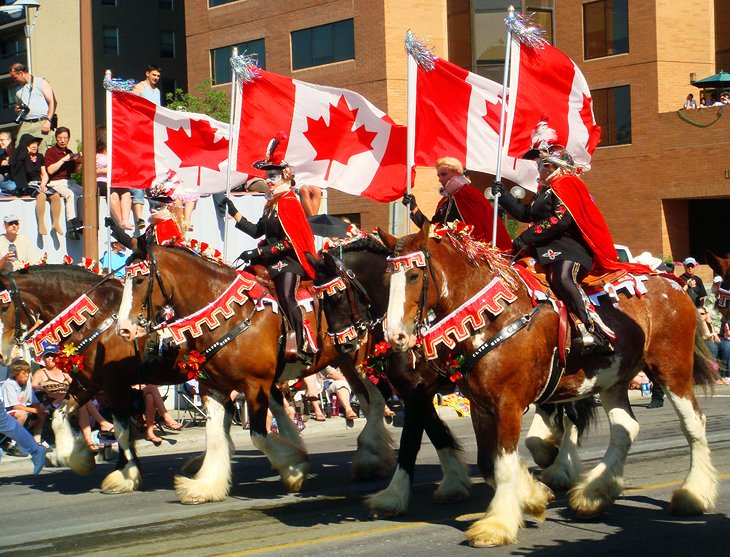
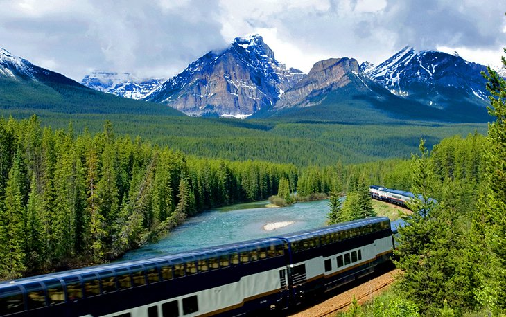

Introduction
Calgary has never shaken off its "Cowtown" nickname. A reference to the region's long history as the center of a vast cattle-rearing region, it's a name that has in fact been of immense value to tourism marketers, conjuring up romantic ideas of cowboys, cattle drives, and an untamed Wild West. Which is why, when you pay a visit to this dynamic city, you'll find many related things to do, from catching the famous Calgary Stampede each July to exploring the city's pioneer-era Heritage Park.
“Canada will be a strong country when Canadians of all provinces feel at home in all parts of the country, and when they feel that all Canada belongs to them.”
World Famous
Calgary Stampede

Calgary Stampede
The 10-day Calgary Stampede can trace its roots back to the 1880s and is the highlight of Calgary's summer, cementing this Alberta city's reputation as Canada's "Stampede City." This famous rodeo-billed as "The Greatest Outdoor Show on Earth"-is held in July and includes all kinds of cowboy- and rodeo-style entertainment and exhibitions. The population and up to a million visitors alike dress accordingly, and blue jeans and brightly colored Stetsons become the order of the day.
Events include a big parade, rodeo competitions.
Rocky Mountaineer Rail Journey

The award-winning, luxuriously appointed, and privately owned Rocky Mountaineer rail tour runs between Calgary or Jasper and Vancouver (the company's base), cutting westward on the historic Canadian Pacific line through the soaring mountain wall of the Rockies. At Canmore, providing the weather is good, there is a fine view of the snow-capped Three Sisters, a grouping of mountain peaks that make for a stunning backdrop to your journey.
TO LEARN MORE:
Candaian-Tourism
Woodbine-Beach
Top 5 Beaches in Toronto